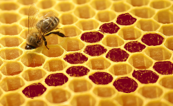

Research
Biological diversity is shaped by trait evolution within populations and by the speciation and extinction of lineages. Our research centers on micro- and macroevolutionary forces that affect the evolution of plant reproductive systems and geographic ranges. We employ math models, statistical phylogenetics, large comparative datasets, and collaboration with experts in a variety of empirical systems.
Reproductive systems and lineage diversification

Traits that influence who mates with whom significantly affect effective population size, inbreeding depression, and spatial distributions of genetic diversity. They may thus have important consequences for population dynamics and, on longer timescales, for speciation and extinction. Our macroevolutionary work is particularly focused on how state-dependent lineage diversification and directionality in evolution shape the diversity of plant reproductive traits.
Self-incompatibility (SI) is a genetic mechanism that causes a hermaphrodite plant to reject its own pollen. SI systems are widespread in flowering plants, but they have originated only rarely and been lost frequently due to a variety of conditions under which selfing is favored. Our work in the nightshade family Solanaceae indicates that species with SI have a higher net rate of diversification and are thus maintained within the family over long time-scales by species selection. Ongoing studies are investigating whether other traits, such as ploidy, might account for this finding, and whether this pattern holds in other families. In contrast, we’ve found different macroevolutionary dynamics for dioecy, a different outcrossing mechanism in which individual plants are either male or female. Across a wide variety of genera, transitions from dioecy to hermaphroditism are perhaps not so rare, and dioecy does not seem to have a consistent effect on lineage diversification.
Collaborators: Boris Igić, NESCent Tree of Sex group, Itay Mayrose, Stacey Smith, Rosana Zenil-Ferguson, Shing Zhan
Phylogenetic comparative methods
Asking these questions about plant macroevolution has spurred us to develop and improve phylogenetic methods for studying trait evolution and lineage diversification.
A special focus is reliable testing of whether some traits are consistently associated with different rates of speciation or extinction. The classic idea of species selection has been revitalized by the availability of large phylogenetic datasets, but the statistics of testing for this dynamic are tricky. Developing new macroevolutionary models and tests of state-dependent diversification is one approach we have taken. Current work also includes creating a benchmarking resource and tests of model adequacy.
The logic of coding traits for phylogenetic analysis is another general interest. This includes ways to test for irreversible evolution, or to enforce it along some lineages (when other data warrant this constraint). Tests of trait regain can yield rather different conclusions when we consider how extensively a trait was “lost” and how exactly it was “regained.” An exciting new direction is developing models that better apply to complex, ecologically important traits that are underlain by changes in many other attributes. The idea is that the longer a lineage has had its trait value, the lower might be the chance of that value changing because of an accumulation of other modifications that cause the focal trait to be more entrenched. We are investigating whether we can learn about this dynamic from phylogenetic comparative data by abandoning the “memory-less” assumption of most existing trait macroevolution models.
Collaborators: Heath Blackmon, Jasmine Foo, Will Freyman, Tracy Heath, Boris Igić, Dan Rabosky, Rick Ree
Financial support: NSF
Geography of mating system

Returning to plant mating systems, another portion of our work investigates their interaction with geography. This includes broad comparative studies showing that island species are more likely to be capable of self-fertilization, that self-fertilizing species consistently have larger geographic ranges and occur at higher latitudes, and that mating system surprisingly does not have a predictable effect on the amount of range overlap between closely related taxa. We also have a mathematical modeling project looking at whether heterosis upon secondary contact can favor the re-evolution of outcrossing. A new direction will build on our earlier spatial models of character displacement, asking whether different patterns of phenotypic divergence arise when one or both of the species habitually self-fertilizes.
Collaborators: Yaniv Brandvain, Dena Grossenbacher, Dave Moeller, Ryan Briscoe Runquist, Alex Harkness, NESCent Baker’s Law group
Financial support: NSF